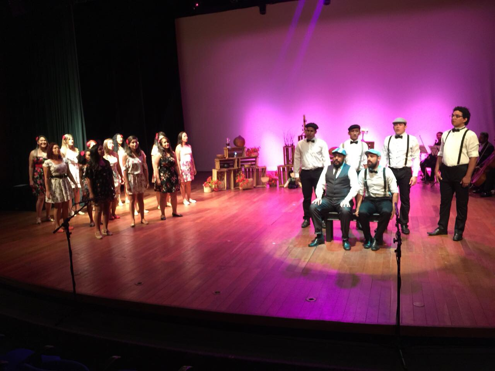
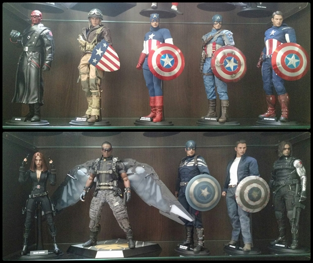
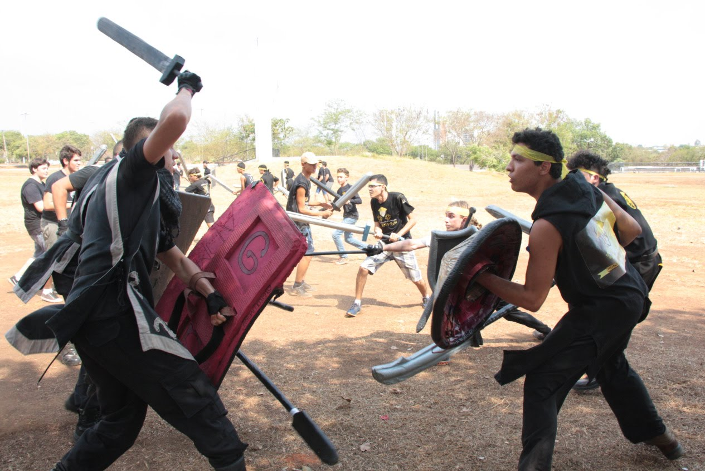

Canto Coral
O "Coral UFT em Canto" é formado por servidores e alunos da UFT, sendo uma ação de extensão da
Pró-reitoria de Extensão, Cultura e Assuntos Comunitários (Proex), por meio do Programa Oficina
de Criação, Performance e Difusão Musical (OCA Musical), cujos objetivos são o de promover a
qualidade de vida dos participantes e estimular o fomento da fruição e da prática musical vocal.

Colecionismo de action figure
Colecionismo de action figure é um hobbie definitivamente Nerd pelos conceitos da sociedade. Gosto de colecionar estatuas
de personagens de anime, filmes, trilogias, em especial do Star Wars. Participo de eventos onde esponho minha coleção e troco experiência
com outros colecionadores."

Swordplay
O swordplay é uma modalidade esportiva que simula combates marciais medievais. O esporte pode ser praticado em combates de um contra um (duelos) ou em grupo e normalmente é praticado por ser uma atividade física divertida e saudável.
O equipamento simula armas medievais, tais como espadas, machados e arcos, ou defesas, como escudos e bloqueadores. A modalidade mais popular, o swordplay boffering tem como característica o uso dos equipamentos normalmente feitos de cano revestidos de espuma, para não machucar o adversário.
Os combates podem ser individuais, chamados de Duelos, Batalhas de Arena ou "X1", ou em grupos, chamados de Batalhas Campais, Massivas ou Jogos de Guerra. As regras específicas de cada versão e modalidade variam conforme a organização, mas algumas características são mantidas, como a proibição de atingir certas partes do corpo, o controle da força e os ataques exclusivamente com as armas.
